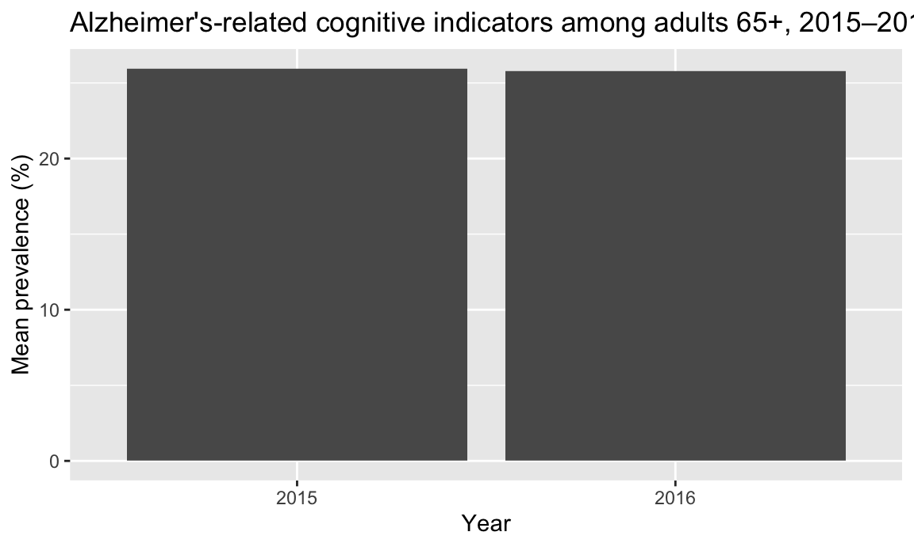
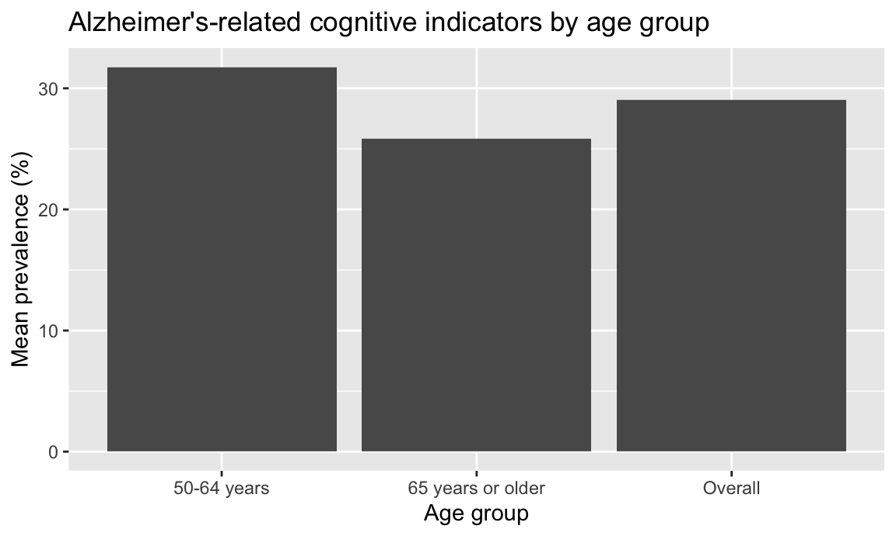
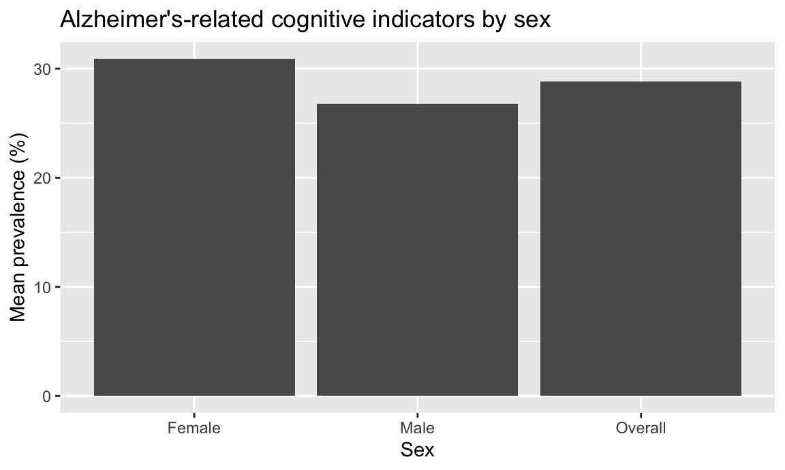
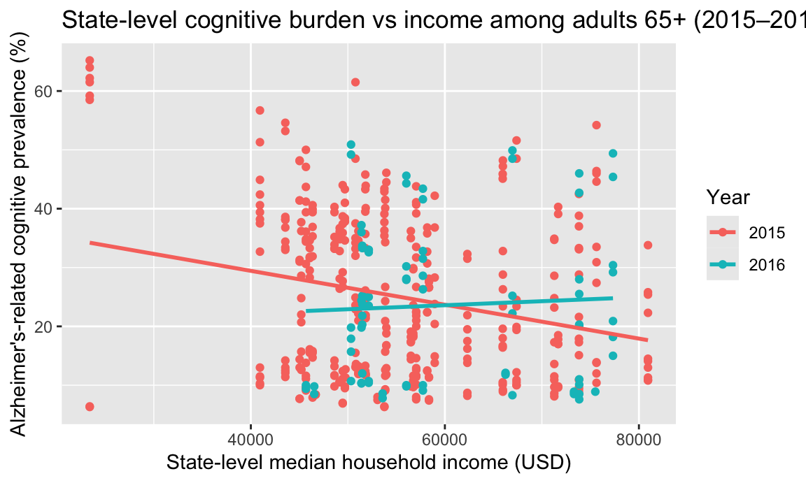
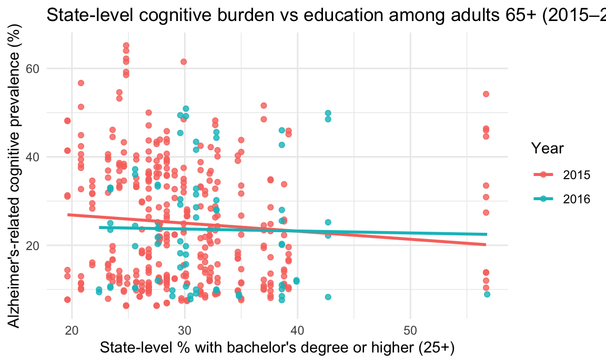
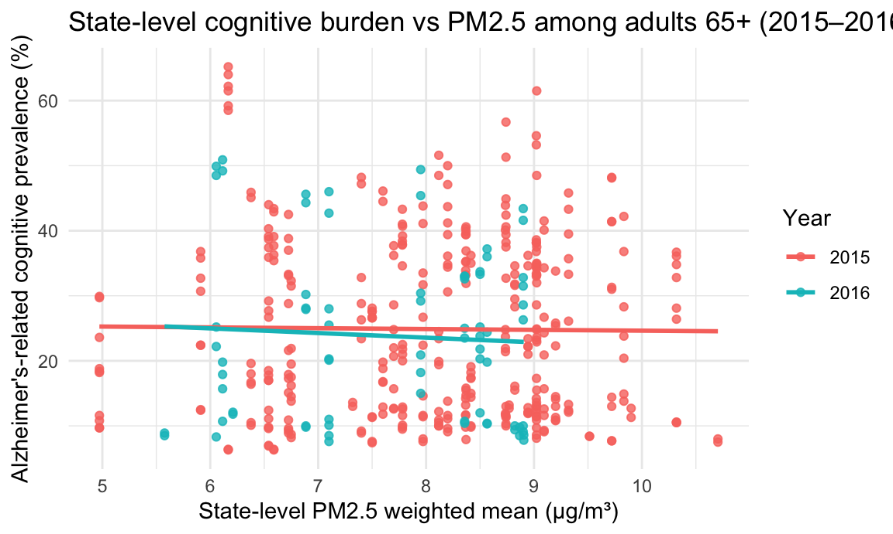

# Load Alzheimer's data
raw_az_data <- read.csv("data/2015-2022 Alzheimer Data.csv") |>
janitor::clean_names()
raw_az_data <- raw_az_data[-nrow(raw_az_data), ]
az_clean <- raw_az_data |>
filter(
!is.na(data_value),
!is.na(year_start),
!is.na(location_abbr)
)
# Filter for cognitive decline/impairment
az_cog <- az_clean |>
filter(
str_detect(topic, regex("cognitive decline|cognitive impairment",
ignore_case = TRUE))
)
# Create base summary with age and sex groups
az_cog_summary_base <- az_cog |>
mutate(
age_group = case_when(
stratification_category1 == "Age Group" ~ stratification1,
TRUE ~ "Overall"
),
sex_group = case_when(
stratification_category2 == "Sex" ~ stratification2,
TRUE ~ "Overall"
)
)
# Filter for 65+ overall
az_cog_65_overall <- az_cog_summary_base |>
filter(
age_group == "65 years or older",
sex_group == "Overall"
)
# Load income data
inc15 <- read_csv("data/median income-2015.csv", skip = 1) |>
janitor::clean_names() |>
transmute(
year = 2015,
state_name = geographic_area_name,
median_income = as.numeric(median_income_dollars_estimate_households)
)
inc16 <- read_csv("data/median income-2016.csv", skip = 1) |>
janitor::clean_names() |>
transmute(
year = 2016,
state_name = geographic_area_name,
median_income = as.numeric(median_income_dollars_estimate_households)
)
income_state <- bind_rows(inc15, inc16)
income_state_with_state <- income_state |>
mutate(
state = str_squish(str_extract(state_name, "[^,]+$")))
income_state_level <- income_state_with_state |>
group_by(year, state) |>
summarise(
n_counties = n(),
median_state = median(median_income, na.rm = TRUE),
mean_state = mean(median_income, na.rm = TRUE),
.groups = "drop"
)
# Merge income with Alzheimer's data
state_vec <- unique(income_state_level$state)
az_cog_65_overall_state <- az_cog_65_overall |>
filter(
year_start %in% c(2015, 2016),
sex_group == "Overall",
location_desc %in% state_vec
)
az_income <- az_cog_65_overall_state |>
left_join(
income_state_level,
by = c("year_start" = "year",
"location_desc" = "state")
)
# Load education data
edu15_raw <- read_csv("data/education2015.csv", skip = 1) |>
janitor::clean_names()
edu15_state <- edu15_raw |>
filter(!str_detect(geographic_area_name, ","))
edu16_raw <- read_csv("data/education2016.csv", skip = 1) |>
janitor::clean_names()
edu16_state <- edu16_raw |>
filter(!str_detect(geographic_area_name, ","))
edu15_state_slim <- edu15_state |>
transmute(
year = 2015,
state = geographic_area_name,
educ_bach = as.numeric(percent_estimate_percent_bachelors_degree_or_higher)
)
edu16_state_slim <- edu16_state |>
transmute(
year = 2016,
state = geographic_area_name,
educ_bach = as.numeric(percent_estimate_percent_bachelors_degree_or_higher)
)
edu_state <- bind_rows(edu15_state_slim, edu16_state_slim)
# Merge education with Alzheimer's data
az_edu <- az_cog_65_overall_state |>
left_join(
edu_state,
by = c(
"year_start" = "year",
"location_desc" = "state"
))
# Load air pollution data
air15 <- read_csv("data/clean_air_state_2015.csv")
air16 <- read_csv("data/clean_air_state_2016.csv")
air_state <- bind_rows(air15, air16)
air_state_level <- air_state |>
group_by(year, state_desc) |>
summarise(
pm25_state = mean(pm25_wtd_mean, na.rm = TRUE),
.groups = "drop"
)
# Merge air pollution with Alzheimer's data
az_air <- az_cog_65_overall_state |>
left_join(
air_state_level,
by = c(
"year_start" = "year",
"location_desc" = "state_desc"
)
)az_nat_65_overall <- az_cog_65_overall |>
group_by(year = year_start) |>
summarise(
mean_prev = mean(data_value, na.rm = TRUE),
sd_prev = sd(data_value, na.rm = TRUE),
.groups = "drop"
)
az_nat_65_overall |>
mutate(year = factor(year)) |>
ggplot(aes(x = year, y = mean_prev)) +
geom_col() +
labs(
x = "Year",
y = "Mean prevalence (%)",
title = "Alzheimer's-related cognitive indicators among adults 65+, 2015–2016"
)
At the national level, the mean prevalence of Alzheimer’s-related cognitive indicators among adults aged 65+ was very similar in 2015 (26.0%) and 2016 (25.8%). The small difference of 0.2 percentage points is well within the between-state variation and does not suggest any clear change over this two-year period.
az_age_desc <- az_cog_summary_base |>
group_by(age_group) |>
summarise(
n_obs = n(),
mean_value = mean(data_value, na.rm = TRUE),
.groups = "drop"
)
ggplot(az_age_desc,
aes(x = age_group, y = mean_value)) +
geom_col() +
labs(
x = "Age group",
y = "Mean prevalence (%)",
title = "Alzheimer's-related cognitive indicators by age group"
)
Across all cognitive items, the mean prevalence was about 31.8% among adults aged 50–64 years and 25.8% among those aged 65 years or older.
az_sex_desc <- az_cog_summary_base |>
group_by(sex_group) |>
summarise(
n_obs = n(),
mean_value = mean(data_value, na.rm = TRUE),
.groups = "drop"
)
ggplot(az_sex_desc,
aes(x = sex_group, y = mean_value)) +
geom_col() +
labs(
x = "Sex",
y = "Mean prevalence (%)",
title = "Alzheimer's-related cognitive indicators by sex"
)
Across all states and cognitive items in 2015–2016, women had a higher mean prevalence of Alzheimer’s-related cognitive indicators than men (30.9% vs 26.8%), suggesting a consistently greater reported cognitive burden among female respondents.
ggplot(az_income,
aes(x = median_state, y = data_value,
color = factor(year_start))) +
geom_point() +
geom_smooth(method = "lm", se = FALSE) +
labs(
x = "State-level median household income (USD)",
y = "Alzheimer's-related cognitive prevalence (%)",
color = "Year",
title = "State-level cognitive burden vs income among adults 65+ (2015–2016)"
)## `geom_smooth()` using formula = 'y ~ x'
model_inc <- lm(
data_value ~ median_state + factor(year_start),
data = az_income
)
summary(model_inc)##
## Call:
## lm(formula = data_value ~ median_state + factor(year_start),
## data = az_income)
##
## Residuals:
## Min 1Q Median 3Q Max
## -26.243 -12.189 -1.897 9.829 35.404
##
## Coefficients:
## Estimate Std. Error t value Pr(>|t|)
## (Intercept) 3.805e+01 3.260e+00 11.672 < 2e-16 ***
## median_state -2.354e-04 5.762e-05 -4.085 5.25e-05 ***
## factor(year_start)2016 -2.920e-01 1.723e+00 -0.169 0.866
## ---
## Signif. codes: 0 '***' 0.001 '**' 0.01 '*' 0.05 '.' 0.1 ' ' 1
##
## Residual standard error: 13.32 on 431 degrees of freedom
## Multiple R-squared: 0.03882, Adjusted R-squared: 0.03436
## F-statistic: 8.704 on 2 and 431 DF, p-value: 0.0001968In a linear regression of state-level Alzheimer’s-related cognitive prevalence on median household income and survey year, higher income was associated with lower cognitive burden. The estimated coefficient for income was \(\hat\beta_{\text{income}} = -2.35 \times 10^{-4}\), meaning that a $1000 increase in state median income was associated with about a prevalence, and a $10000 increase was associated with about a prevalence among adults aged 65+. The coefficient for survey year (2016 vs 2015) was small (\(\hat\beta = -0.29\)), suggesting no clear overall difference between the two years after accounting for income. However, the model \(R^2\) was only , indicating that income explains only a small fraction of the large between-state variation in cognitive outcomes.
Although higher state-level income was statistically associated with lower Alzheimer’s-related cognitive prevalence, income explained only a small share of the between-state variability. Several factors may contribute to this weak relationship. First, the analysis is ecological: each observation is an aggregated state–year estimate, so large within-state differences in income and cognitive health are not captured, and any individual-level association is diluted. Second, both cognitive burden and income are measured with error (self-reported survey indicators and ACS estimates), and we further aggregated county-level income up to the state level, which may introduce additional noise. Third, we only examined two years (2015–2016), over which variation in both income and prevalence is fairly modest. Finally, many other state-level determinants—such as education, health care access, demographic composition, and prevalence of vascular risk factors—were not adjusted for, so income alone is unlikely to account for the wide variation in cognitive outcomes across states.
ggplot(az_edu,
aes(x = educ_bach,
y = data_value,
color = factor(year_start))) +
geom_point(alpha = 0.8) +
geom_smooth(method = "lm", se = FALSE) +
labs(
x = "State-level % with bachelor's degree or higher (25+)",
y = "Alzheimer's-related cognitive prevalence (%)",
color = "Year",
title = "State-level cognitive burden vs education among adults 65+ (2015–2016)"
) +
theme_minimal()## `geom_smooth()` using formula = 'y ~ x'
model_edu <-
lm(
data_value ~ educ_bach + factor(year_start),
data = az_edu)
summary(model_edu)##
## Call:
## lm(formula = data_value ~ educ_bach + factor(year_start), data = az_edu)
##
## Residuals:
## Min 1Q Median 3Q Max
## -19.554 -12.737 -2.077 10.376 39.346
##
## Coefficients:
## Estimate Std. Error t value Pr(>|t|)
## (Intercept) 29.87275 2.95268 10.117 <2e-16 ***
## educ_bach -0.16205 0.09617 -1.685 0.0927 .
## factor(year_start)2016 -1.13543 1.73643 -0.654 0.5135
## ---
## Signif. codes: 0 '***' 0.001 '**' 0.01 '*' 0.05 '.' 0.1 ' ' 1
##
## Residual standard error: 13.53 on 431 degrees of freedom
## Multiple R-squared: 0.008142, Adjusted R-squared: 0.003539
## F-statistic: 1.769 on 2 and 431 DF, p-value: 0.1717In a linear regression of state-level Alzheimer’s-related cognitive prevalence on the percentage of adults with a bachelor’s degree or higher and survey year, higher education was associated with lower cognitive burden. The estimated coefficient for education was \(\hat\beta_{\text{educ}} = -0.16\), meaning that a 1–percentage-point increase in the share of adults 25 years and older with at least a bachelor’s degree was associated with about a prevalence of Alzheimer’s-related cognitive problems among adults aged 65+. A 10–percentage-point increase in educational attainment would correspond to roughly a prevalence. However, this association was relatively weak and not conventionally statistically significant (the approximate 95% confidence interval for \(\hat\beta_{\text{educ}}\) ranges from about \(-0.35\) to \(0.03\)). The coefficient for survey year (2016 vs 2015) was small (\(\hat\beta = -1.14\)), suggesting no clear overall difference between the two years after accounting for education. The model \(R^2\) was only about , indicating that education and year together explain only a small fraction of the large between-state variation in cognitive outcomes.
Although states with higher levels of college education tended to have slightly lower Alzheimer’s-related cognitive prevalence, the relationship was weak and most of the between-state variability remained unexplained. Several factors may help explain this. First, the analysis is ecological: each data point is a state–year average, so big within-state differences in education and cognitive health are smoothed out, and any individual-level association is likely diluted. Second, both education and cognitive burden come from survey-based estimates and can be measured with error; on top of that, we aggregated county-level education indicators to the state level, which probably adds extra noise. Third, we only looked at two survey years (2015–2016), so there is not much variation over time in either education or cognitive outcomes. Finally, many other state-level factors—such as income, access to health care, population structure, and the prevalence of vascular and lifestyle risk factors—were not included in the model, so education alone is unlikely to explain the wide differences in cognitive outcomes across states.
ggplot(az_air,
aes(x = pm25_state,
y = data_value,
color = factor(year_start))) +
geom_point(alpha = 0.8) +
geom_smooth(method = "lm", se = FALSE) +
labs(
x = "State-level PM2.5 weighted mean (µg/m³)",
y = "Alzheimer's-related cognitive prevalence (%)",
color = "Year",
title = "State-level cognitive burden vs PM2.5 among adults 65+ (2015–2016)"
) +
theme_minimal()## `geom_smooth()` using formula = 'y ~ x'## Warning: Removed 12 rows containing non-finite outside the scale range
## (`stat_smooth()`).## Warning: Removed 12 rows containing missing values or values outside the scale range
## (`geom_point()`).
model_air <- lm(
data_value ~ pm25_state + factor(year_start),
data = az_air
)
summary(model_air)##
## Call:
## lm(formula = data_value ~ pm25_state + factor(year_start), data = az_air)
##
## Residuals:
## Min 1Q Median 3Q Max
## -18.972 -12.651 -2.391 10.294 39.928
##
## Coefficients:
## Estimate Std. Error t value Pr(>|t|)
## (Intercept) 26.5460 4.4889 5.914 6.95e-09 ***
## pm25_state -0.2067 0.5494 -0.376 0.707
## factor(year_start)2016 -1.1602 1.7507 -0.663 0.508
## ---
## Signif. codes: 0 '***' 0.001 '**' 0.01 '*' 0.05 '.' 0.1 ' ' 1
##
## Residual standard error: 13.49 on 419 degrees of freedom
## (12 observations deleted due to missingness)
## Multiple R-squared: 0.001254, Adjusted R-squared: -0.003514
## F-statistic: 0.263 on 2 and 419 DF, p-value: 0.7689In a linear regression of state-level Alzheimer’s-related cognitive prevalence on PM2.5 and survey year, we did not observe a clear association between air pollution and cognitive burden among adults aged 65+. The estimated coefficient for PM2.5 was \(\hat\beta_{\text{PM2.5}} =\) -0.207, meaning that a 1–µg/m³ increase in the state-level PM2.5 weighted mean was associated with an estimated -0.207–percentage-point change in Alzheimer’s-related cognitive prevalence. A 10–µg/m³ difference in PM2.5 would therefore correspond to roughly -2.07 percentage points. However, this association was small and not statistically significant (p = 0.707), indicating that PM2.5 is not a strong predictor of between-state differences in cognitive burden in this model.
The coefficient for survey year (2016 vs 2015) was \(\hat\beta_{\text{year}} =\) -1.16 with p = 0.508, suggesting no meaningful overall change in prevalence between the two years after accounting for PM2.5. The model \(R^2\) was only 0.001, implying that PM2.5 and year together explain only a negligible fraction of the substantial between-state variation in Alzheimer’s-related cognitive outcomes. This is not surprising given the ecological nature of the analysis (state-level averages), potential measurement error in both pollution and cognitive indicators, the short two-year time window, and the absence of other important determinants such as income, education, demographics, and health care access.